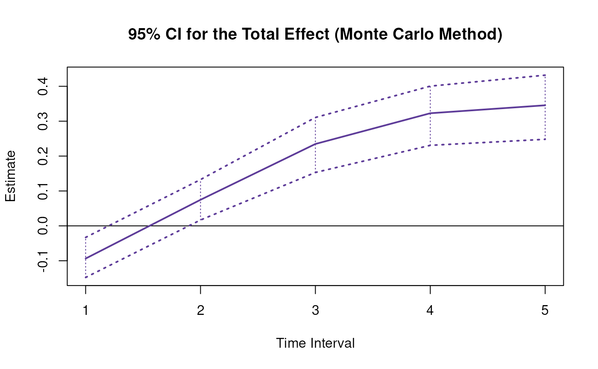
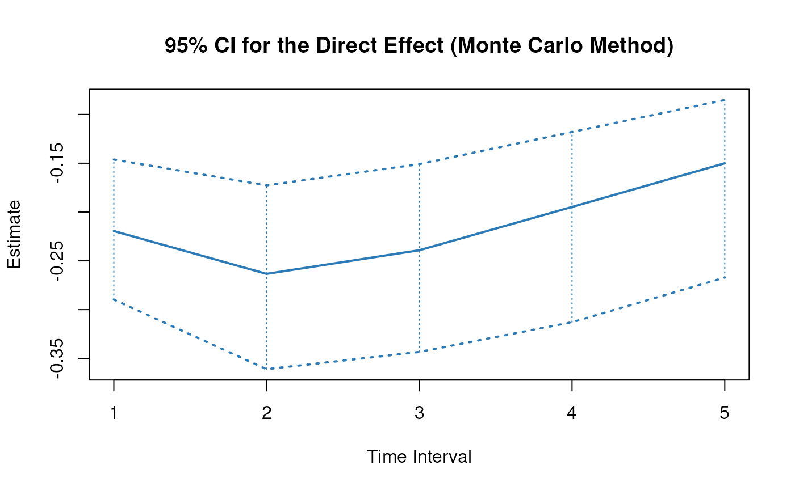
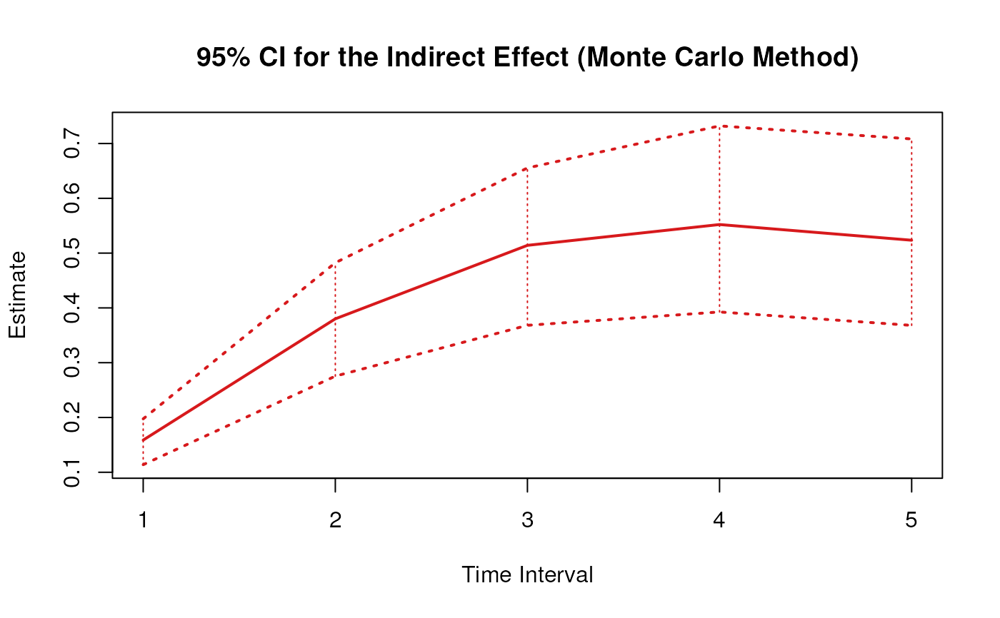

Monte Carlo Sampling Distribution of Standardized Total, Direct, and Indirect Effects of X on Y Through M Over a Specific Time Interval or a Range of Time Intervals
Source:R/cTMed-mc-med-std.R
MCMedStd.RdThis function generates a Monte Carlo method sampling distribution of the standardized total, direct and indirect effects of the independent variable \(X\) on the dependent variable \(Y\) through mediator variables \(\mathbf{m}\) over a specific time interval \(\Delta t\) or a range of time intervals using the first-order stochastic differential equation model drift matrix \(\boldsymbol{\Phi}\) and process noise covariance matrix \(\boldsymbol{\Sigma}\).
Usage
MCMedStd(
phi,
sigma,
vcov_theta,
delta_t,
from,
to,
med,
R,
test_phi = TRUE,
ncores = NULL,
seed = NULL,
tol = 0.01
)Arguments
- phi
Numeric matrix. The drift matrix (\(\boldsymbol{\Phi}\)).
phishould have row and column names pertaining to the variables in the system.- sigma
Numeric matrix. The process noise covariance matrix (\(\boldsymbol{\Sigma}\)).
- vcov_theta
Numeric matrix. The sampling variance-covariance matrix of \(\mathrm{vec} \left( \boldsymbol{\Phi} \right)\) and \(\mathrm{vech} \left( \boldsymbol{\Sigma} \right)\)
- delta_t
Numeric. Time interval (\(\Delta t\)).
- from
Character string. Name of the independent variable \(X\) in
phi.- to
Character string. Name of the dependent variable \(Y\) in
phi.- med
Character vector. Name/s of the mediator variable/s in
phi.- R
Positive integer. Number of replications.
- test_phi
Logical. If
test_phi = TRUE, the function tests the stability of the generated drift matrix \(\boldsymbol{\Phi}\). If the test returnsFALSE, the function generates a new drift matrix \(\boldsymbol{\Phi}\) and runs the test recursively until the test returnsTRUE.- ncores
Positive integer. Number of cores to use. If
ncores = NULL, use a single core. Consider using multiple cores when number of replicationsRis a large value.- seed
Random seed.
- tol
Numeric. Smallest possible time interval to allow.
Value
Returns an object
of class ctmedmc which is a list with the following elements:
- call
Function call.
- args
Function arguments.
- fun
Function used ("MCMedStd").
- output
A list with length of
length(delta_t).
Each element in the output list has the following elements:
- est
A vector of standardized total, direct, and indirect effects.
- thetahatstar
A matrix of Monte Carlo standardized total, direct, and indirect effects.
Details
See TotalStd(),
DirectStd(), and
IndirectStd() for more details.
Monte Carlo Method
Let \(\boldsymbol{\theta}\) be a vector that combines \(\mathrm{vec} \left( \boldsymbol{\Phi} \right)\), that is, the elements of the \(\boldsymbol{\Phi}\) matrix in vector form sorted column-wise and \(\mathrm{vech} \left( \boldsymbol{\Sigma} \right)\), that is, the unique elements of the \(\boldsymbol{\Sigma}\) matrix in vector form sorted column-wise. Let \(\hat{\boldsymbol{\theta}}\) be a vector that combines \(\mathrm{vec} \left( \hat{\boldsymbol{\Phi}} \right)\) and \(\mathrm{vech} \left( \hat{\boldsymbol{\Sigma}} \right)\). Based on the asymptotic properties of maximum likelihood estimators, we can assume that estimators are normally distributed around the population parameters. $$ \hat{\boldsymbol{\theta}} \sim \mathcal{N} \left( \boldsymbol{\theta}, \mathbb{V} \left( \hat{\boldsymbol{\theta}} \right) \right) $$ Using this distributional assumption, a sampling distribution of \(\hat{\boldsymbol{\theta}}\) which we refer to as \(\hat{\boldsymbol{\theta}}^{\ast}\) can be generated by replacing the population parameters with sample estimates, that is, $$ \hat{\boldsymbol{\theta}}^{\ast} \sim \mathcal{N} \left( \hat{\boldsymbol{\theta}}, \hat{\mathbb{V}} \left( \hat{\boldsymbol{\theta}} \right) \right) . $$ Let \(\mathbf{g} \left( \hat{\boldsymbol{\theta}} \right)\) be a parameter that is a function of the estimated parameters. A sampling distribution of \(\mathbf{g} \left( \hat{\boldsymbol{\theta}} \right)\) , which we refer to as \(\mathbf{g} \left( \hat{\boldsymbol{\theta}}^{\ast} \right)\) , can be generated by using the simulated estimates to calculate \(\mathbf{g}\). The standard deviations of the simulated estimates are the standard errors. Percentiles corresponding to \(100 \left( 1 - \alpha \right) \%\) are the confidence intervals.
References
Bollen, K. A. (1987). Total, direct, and indirect effects in structural equation models. Sociological Methodology, 17, 37. doi:10.2307/271028
Deboeck, P. R., & Preacher, K. J. (2015). No need to be discrete: A method for continuous time mediation analysis. Structural Equation Modeling: A Multidisciplinary Journal, 23 (1), 61-75. doi:10.1080/10705511.2014.973960
Pesigan, I. J. A., Russell, M. A., & Chow, S.-M. (2025). Inferences and effect sizes for direct, indirect, and total effects in continuous-time mediation models. Psychological Methods. doi:10.1037/met0000779
Ryan, O., & Hamaker, E. L. (2021). Time to intervene: A continuous-time approach to network analysis and centrality. Psychometrika, 87 (1), 214-252. doi:10.1007/s11336-021-09767-0
See also
Other Continuous-Time Mediation Functions:
BootBeta(),
BootBetaStd(),
BootIndirectCentral(),
BootMed(),
BootMedStd(),
BootTotalCentral(),
DeltaBeta(),
DeltaBetaStd(),
DeltaIndirectCentral(),
DeltaMed(),
DeltaMedStd(),
DeltaTotalCentral(),
Direct(),
DirectStd(),
Indirect(),
IndirectCentral(),
IndirectStd(),
MCBeta(),
MCBetaStd(),
MCIndirectCentral(),
MCMed(),
MCPhi(),
MCPhiSigma(),
MCTotalCentral(),
Med(),
MedStd(),
PosteriorBeta(),
PosteriorIndirectCentral(),
PosteriorMed(),
PosteriorTotalCentral(),
Total(),
TotalCentral(),
TotalStd(),
Trajectory()
Examples
phi <- matrix(
data = c(
-0.357, 0.771, -0.450,
0.0, -0.511, 0.729,
0, 0, -0.693
),
nrow = 3
)
colnames(phi) <- rownames(phi) <- c("x", "m", "y")
sigma <- matrix(
data = c(
0.24455556, 0.02201587, -0.05004762,
0.02201587, 0.07067800, 0.01539456,
-0.05004762, 0.01539456, 0.07553061
),
nrow = 3
)
vcov_theta <- matrix(
data = c(
0.00843, 0.00040, -0.00151, -0.00600, -0.00033,
0.00110, 0.00324, 0.00020, -0.00061, -0.00115,
0.00011, 0.00015, 0.00001, -0.00002, -0.00001,
0.00040, 0.00374, 0.00016, -0.00022, -0.00273,
-0.00016, 0.00009, 0.00150, 0.00012, -0.00010,
-0.00026, 0.00002, 0.00012, 0.00004, -0.00001,
-0.00151, 0.00016, 0.00389, 0.00103, -0.00007,
-0.00283, -0.00050, 0.00000, 0.00156, 0.00021,
-0.00005, -0.00031, 0.00001, 0.00007, 0.00006,
-0.00600, -0.00022, 0.00103, 0.00644, 0.00031,
-0.00119, -0.00374, -0.00021, 0.00070, 0.00064,
-0.00015, -0.00005, 0.00000, 0.00003, -0.00001,
-0.00033, -0.00273, -0.00007, 0.00031, 0.00287,
0.00013, -0.00014, -0.00170, -0.00012, 0.00006,
0.00014, -0.00001, -0.00015, 0.00000, 0.00001,
0.00110, -0.00016, -0.00283, -0.00119, 0.00013,
0.00297, 0.00063, -0.00004, -0.00177, -0.00013,
0.00005, 0.00017, -0.00002, -0.00008, 0.00001,
0.00324, 0.00009, -0.00050, -0.00374, -0.00014,
0.00063, 0.00495, 0.00024, -0.00093, -0.00020,
0.00006, -0.00010, 0.00000, -0.00001, 0.00004,
0.00020, 0.00150, 0.00000, -0.00021, -0.00170,
-0.00004, 0.00024, 0.00214, 0.00012, -0.00002,
-0.00004, 0.00000, 0.00006, -0.00005, -0.00001,
-0.00061, 0.00012, 0.00156, 0.00070, -0.00012,
-0.00177, -0.00093, 0.00012, 0.00223, 0.00004,
-0.00002, -0.00003, 0.00001, 0.00003, -0.00013,
-0.00115, -0.00010, 0.00021, 0.00064, 0.00006,
-0.00013, -0.00020, -0.00002, 0.00004, 0.00057,
0.00001, -0.00009, 0.00000, 0.00000, 0.00001,
0.00011, -0.00026, -0.00005, -0.00015, 0.00014,
0.00005, 0.00006, -0.00004, -0.00002, 0.00001,
0.00012, 0.00001, 0.00000, -0.00002, 0.00000,
0.00015, 0.00002, -0.00031, -0.00005, -0.00001,
0.00017, -0.00010, 0.00000, -0.00003, -0.00009,
0.00001, 0.00014, 0.00000, 0.00000, -0.00005,
0.00001, 0.00012, 0.00001, 0.00000, -0.00015,
-0.00002, 0.00000, 0.00006, 0.00001, 0.00000,
0.00000, 0.00000, 0.00010, 0.00001, 0.00000,
-0.00002, 0.00004, 0.00007, 0.00003, 0.00000,
-0.00008, -0.00001, -0.00005, 0.00003, 0.00000,
-0.00002, 0.00000, 0.00001, 0.00005, 0.00001,
-0.00001, -0.00001, 0.00006, -0.00001, 0.00001,
0.00001, 0.00004, -0.00001, -0.00013, 0.00001,
0.00000, -0.00005, 0.00000, 0.00001, 0.00012
),
nrow = 15
)
# Specific time interval ----------------------------------------------------
MCMedStd(
phi = phi,
sigma = sigma,
vcov_theta = vcov_theta,
delta_t = 1,
from = "x",
to = "y",
med = "m",
R = 100L # use a large value for R in actual research
)
#> Call:
#> MCMedStd(phi = phi, sigma = sigma, vcov_theta = vcov_theta, delta_t = 1,
#> from = "x", to = "y", med = "m", R = 100L)
#>
#> Total, Direct, and Indirect Effects
#>
#> effect interval est se R 2.5% 97.5%
#> 1 total 1 -0.1069 0.0353 100 -0.1865 -0.0383
#> 2 direct 1 -0.2858 0.0470 100 -0.3934 -0.1913
#> 3 indirect 1 0.1789 0.0193 100 0.1445 0.2196
# Range of time intervals ---------------------------------------------------
mc <- MCMedStd(
phi = phi,
sigma = sigma,
vcov_theta = vcov_theta,
delta_t = 1:5,
from = "x",
to = "y",
med = "m",
R = 100L # use a large value for R in actual research
)
plot(mc)



# Methods -------------------------------------------------------------------
# MCMedStd has a number of methods including
# print, summary, confint, and plot
print(mc)
#> Call:
#> MCMedStd(phi = phi, sigma = sigma, vcov_theta = vcov_theta, delta_t = 1:5,
#> from = "x", to = "y", med = "m", R = 100L)
#>
#> Total, Direct, and Indirect Effects
#>
#> effect interval est se R 2.5% 97.5%
#> 1 total 1 -0.1069 0.0337 100 -0.1713 -0.0391
#> 2 direct 1 -0.2858 0.0419 100 -0.3559 -0.2046
#> 3 indirect 1 0.1789 0.0185 100 0.1391 0.2148
#> 4 total 2 0.0854 0.0385 100 0.0165 0.1550
#> 5 direct 2 -0.3429 0.0574 100 -0.4526 -0.2425
#> 6 indirect 2 0.4283 0.0464 100 0.3354 0.5235
#> 7 total 3 0.2680 0.0363 100 0.1941 0.3368
#> 8 direct 3 -0.3114 0.0631 100 -0.4466 -0.2046
#> 9 indirect 3 0.5794 0.0697 100 0.4549 0.7422
#> 10 total 4 0.3686 0.0358 100 0.3038 0.4534
#> 11 direct 4 -0.2537 0.0635 100 -0.4090 -0.1566
#> 12 indirect 4 0.6222 0.0849 100 0.4887 0.8125
#> 13 total 5 0.3946 0.0385 100 0.3385 0.4786
#> 14 direct 5 -0.1954 0.0605 100 -0.3602 -0.1127
#> 15 indirect 5 0.5899 0.0917 100 0.4650 0.7957
summary(mc)
#> Call:
#> MCMedStd(phi = phi, sigma = sigma, vcov_theta = vcov_theta, delta_t = 1:5,
#> from = "x", to = "y", med = "m", R = 100L)
#>
#> Total, Direct, and Indirect Effects
#>
#> effect interval est se R 2.5% 97.5%
#> 1 total 1 -0.1069 0.0337 100 -0.1713 -0.0391
#> 2 direct 1 -0.2858 0.0419 100 -0.3559 -0.2046
#> 3 indirect 1 0.1789 0.0185 100 0.1391 0.2148
#> 4 total 2 0.0854 0.0385 100 0.0165 0.1550
#> 5 direct 2 -0.3429 0.0574 100 -0.4526 -0.2425
#> 6 indirect 2 0.4283 0.0464 100 0.3354 0.5235
#> 7 total 3 0.2680 0.0363 100 0.1941 0.3368
#> 8 direct 3 -0.3114 0.0631 100 -0.4466 -0.2046
#> 9 indirect 3 0.5794 0.0697 100 0.4549 0.7422
#> 10 total 4 0.3686 0.0358 100 0.3038 0.4534
#> 11 direct 4 -0.2537 0.0635 100 -0.4090 -0.1566
#> 12 indirect 4 0.6222 0.0849 100 0.4887 0.8125
#> 13 total 5 0.3946 0.0385 100 0.3385 0.4786
#> 14 direct 5 -0.1954 0.0605 100 -0.3602 -0.1127
#> 15 indirect 5 0.5899 0.0917 100 0.4650 0.7957
confint(mc, level = 0.95)
#> effect interval 2.5 % 97.5 %
#> 1 total 1 -0.17134324 -0.03910697
#> 2 direct 1 -0.35589460 -0.20459967
#> 3 indirect 1 0.13914626 0.21479420
#> 4 total 2 0.01652097 0.15495342
#> 5 direct 2 -0.45259965 -0.24249560
#> 6 indirect 2 0.33540816 0.52345368
#> 7 total 3 0.19406457 0.33680333
#> 8 direct 3 -0.44658476 -0.20462236
#> 9 indirect 3 0.45491230 0.74217235
#> 10 total 4 0.30375980 0.45341980
#> 11 direct 4 -0.40899422 -0.15657623
#> 12 indirect 4 0.48869631 0.81248945
#> 13 total 5 0.33845203 0.47862426
#> 14 direct 5 -0.36017010 -0.11272510
#> 15 indirect 5 0.46500543 0.79569340